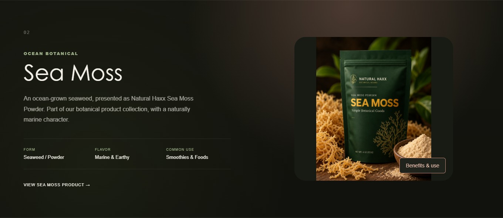

A cohesive visual system.
Color, typography, translucent navigation, and product imagery work together across the homepage and supporting pages.
WEB DESIGN / FRONT-END DEVELOPMENT
Rooted in nature.
Designed to be explored.

THE DIRECTION
Studio82 designed and developed a website for Natural Haxx that puts botanical ingredients at the center of the experience. Deep greens, warm rose-gold accents, and generous imagery create a rich setting for the brand’s collection.
The homepage pairs a botanical video backdrop with direct paths into products and ingredient information. Consistent navigation and responsive layouts carry that visual language from the first impression into the details.
DESIGN INTO DEVELOPMENT
Color, typography, translucent navigation, and product imagery work together across the homepage and supporting pages.
Dedicated ingredient sections pair product visuals with readable details. Interactive flip cards reveal additional information without leaving the page.
HTML, CSS, and JavaScript bring the layouts and interactions to life, including video controls and arrangements for desktop and mobile screens.

Shown here: the website in development. This case study presents the design and front-end work; online checkout and a public launch are not part of this preview.